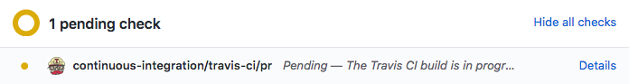

Contributing with GitHub via command-line
Overview
QuestionsObjectives
- How can I contribute to an open-source project with GitHub?
- What is the GitHub flow?
- Fork a repository on GitHub
- Clone a remote repository locally
- Create a branch
- Commit changes
- Push changes to a remote repository
- Create a pull request
- Update a pull request
Time estimation: 30min
Introduction
Most of the content is written in GitHub Flavored Markdown with some metadata (or variables) found in YAML files. Everything is stored on a GitHub repository: https://github.com/galaxyproject/training-material.
The process of development of new content is open and transparent, using git and following the GitHub flow:

- Create a fork
- Clone your fork of this repository to create a local copy on your computer
- Create a new branch in your local copy for each significant change
- Commit the changes in that branch
- Push that branch to your fork on GitHub
- Submit a pull request from that branch to the master repository
- If you receive feedback, make changes in your local clone and push them to your branch on GitHub: the pull request will update automatically
- Pull requests will be merged by the training team members after at least one other person has reviewed the Pull request and approved it.
Agenda
In this tutorial, you will learn how to contribute to the GitHub repository:
Create a fork of this repository on GitHub
A fork is a copy of a repository. Forking a repository allows you to freely experiment with changes without affecting the original project:

Forking a repository is a simple two-step process:
Hands-on: Fork the repository
Comment
When you click the Fork button GitHub will show you a list with your user and any groups where you can create a fork of this repository. If you do not see yourself, it means you already have a fork.

Clone the GitHub repository on your computer
To modify the content of the repository, you need a copy of it on your computer. This step of importing a git repository is called “cloning”:

Hands-on: Clone the GitHub repository
- Get the URL of your fork. You can find this on the main page of your fork under the green button:
Click on Clone or download (right)
Copy the URL
It should be something like
https://github.com/< Your GitHub Username >/training-material.git- Open a terminal
- Navigate with
cdto the folder in which you will clone the repositoryClone the repository with the command:
$ git clone https://github.com/< Your GitHub Username >/training-material.gitNavigate to the repository
$ cd training-material

Create a new branch
You have now your repository locally and you want to modify it. For this example tutorial, you will add yourself as contributor of the project to appear on the Hall of Fame.
In GitHub flow, there is a concept: one new feature or change = one branch.
When you’re working on a project, you’re going to have a bunch of different features or ideas in progress at any given time – some of which are ready to go, and others which are not. Branching exists to help you manage this workflow. You should develop different features on different branches to help keep the changes you make simple and easy to review.

Here for this tutorial, you will create a branch called “my_new_branch” in which you will modify the CONTRIBUTORS.yaml file, the file used to generate the Hall of Fame.
Hands-on: Create a branch
List the existing branch
$ git branch * masterThe branch on which you are is shown with the
*Create a new branch
$ git checkout -b my_new_branch Switched to a new branch 'my_new_branch'List the existing branch to check that the branch has been created and you are now on it
This branch is added to your local copy:

Make your changes on this branch
You have created your first branch! Now you want to make the change in the CONTRIBUTING.yaml file. By changing a file in this branch, it will diverge from the master branch. It will contain data that is only on this new branch:

Hands-on: Make changes in a branch
Modify the
CONTRIBUTORS.yamlto add yourselfYou should use your GitHub username and add it followed by
:at the correct position given the alphabetical order- Save the file
Check the changes you made
$ git status On branch my_new_branch Changes not staged for commit: (use "git add/rm <file>..." to update what will be committed) (use "git checkout -- <file>..." to discard changes in working directory) modified: CONTRIBUTORS.yaml no changes added to commit (use "git add" and/or "git commit -a")Add the file and commit the changes
$ git add CONTRIBUTORS.yaml $ git commit -m "Add ..."- Check that there are no more changes to commit with
git status
Push your branch on your GitHub repository
The changes you made on your branch are only on the local copy of the repository. To propagate them online, you need to push them on your fork on GitHub:
Hands-on: Push the changes
Push the changes to the GitHub repository
$ git push origin my_new_branch“push origin”
When you
git pushed, you specifiedorigin. Git repositories can know that forks exist in multiple places. When you clone one, it creates a “remote” (a remote repository) which it namesorigin, set to the URL that you used when you cloned. By having multiple remotes, you can manage more complex workflows.- Go to your GitHub repository
- Change to the “my_new_branch” branch:
Click on Branch: master (left)
Select the branch “my_new_branch”
- Check that your name is in the
CONTRIBUTORS.yamlfile


Open a pull request
You pushed your changes to GitHub, but currently they are only on your fork. You want to have these changes in the main GitHub repository in order to appear on our Hall of Fame online. You can’t add or push directly the main GitHub repository, so you need to create what we call a pull request:

Hands-on: Create a pull request
- Go to your GitHub repository
Click on Compare & pull request
Check that the selected branch are correct: master on the left and your branch name on the right
Fill in the pull request description
- Add a title for the Pull Request
- Add a message explaining the changes you made (Be kind )
- Click on Create pull request
- Go to Pull requests to check if it is there


Once the pull is open, it will be reviewed. There are two possible outcomes:
- Your pull request is accepted. Congratulations! Your changes will be merged into the master branch of the original repository. The website will be re-built and you will be in the Hall of Fame
- Your pull request needs modifications: the reviewers will ask for some changes, possibly because the automatic tests are failing.
Make the requested changes
One of the reviewers of your pull request asked you to add your name after your GitHub username in the CONTRIBUTORS.yaml file
Hands-on: Make further changes
Make the requested changes in the
CONTRIBUTORS.yamlfileIt should look like
bebatut: name: Bérénice BatutCheck the changes that you made
$ git status On branch my_new_branch Changes not staged for commit: (use "git add/rm <file>..." to update what will be committed) (use "git checkout -- <file>..." to discard changes in working directory) modified: CONTRIBUTORS.yaml no changes added to commit (use "git add" and/or "git commit -a")Add the file and commit the changes
$ git add CONTRIBUTORS.yaml $ git commit -m "Add ..."- Check that there are no more changes to commit with
git statusPush the new changes to GitHub
$ git push origin my_new_branchThe pull request should be automatically updated
- Check that the new changes are added to the pull request on GitHub
Check the automatic tests
When a pull request is opened, some automated tests are automatically launched on Travis to be sure that the changes do not break the website, the URL are valid, etc.
On the bottom of your pull request, you can see the status of the tests:
-
Yellow (with circle)

The tests are still running
-
Red (with cross)

When it is red, you can investigate why by clicking on Details. You will be redirected on Travis where you can see the logs of the tests. Get in touch with us on Gitter if you need help to understand the issue.
-
Green (with tick)

The tests passed. Good job!
Even it is green, we recommend to check the result of the tests, as some of tests are allowed to fail (to avoid too much noise).
Conclusion
With this tutorial, you have learned the basics of contributing using GitHub:

You can now contribute and help us to improve our tutorials.
Git in Depth
This tutorial was a quick introduction to explain the basics of contributing to the training material. We recommend that everyone follow a more detailed git tutorials:
- Software Carpentry tutorial which explains a bit more in detail some git commands and the concept of remote, local and stagging
- Learn Git Branching by GitHub to test the different git commands
You should also download, print and keep always with you the Git Cheat Sheet
Key points
- Work on your fork
- 1 branch = 1 feature
- 1 pull request = 1 branch
- Be careful of the branch you're working on
- Check the automated tests
Developing GTN training material
This tutorial is part of a series to develop GTN training material, feel free to also look at:
- Overview of the Galaxy Training Material
- Contributing with GitHub via its interface
- Creating a new tutorial - Writing content in Markdown
- Creating a new tutorial - Defining metadata
- Creating a new tutorial - Creating Interactive Galaxy Tours
- Creating a new tutorial - Defining the technical infrastructure
- Creating a new tutorial - Slides
- Including a new topic
- Running the Galaxy Training material website locally
- Generating PDF artefacts of the website
- Good practices to run a workshop
- Set up a Galaxy for Training
Congratulations on successfully completing this tutorial!
Help us improve this content!
Please take a moment to fill in the Galaxy Training Network Feedback Form. Your feedback helps us improve this tutorial and will be considered in future revisions.